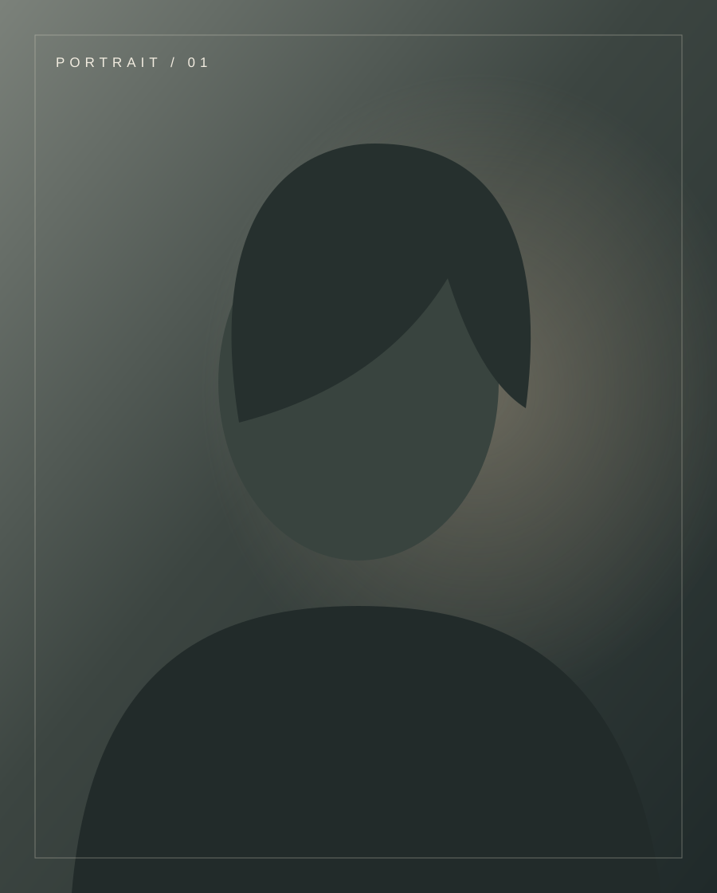

Towarzystwo Psychopedagogiczne
Leadership, interdisciplinary collaboration and psychological education.
PSYCHOTHERAPY · WRITING · EDUCATION
A personal archive of people, ideas and the work that connects them. From Poland to Australia, and always in progress.
Explore the work↗
01 — SELECTED WORK
001 / 008Books, editorial projects, essays and practical ideas. Different formats. One ongoing conversation.

A publication on understanding support

A themed issue on motivation

A work on the psychology of motivation

02 — THE PERSON
I work at the meeting point of mental health, psychotherapy, education and writing.
My professional path began in Poland and continued in Australia. Along the way, I have worked with young people, adults and families, supported learning, and built projects around psychological knowledge.
This space is a place for the work itself: what I write, what I question, what I build, and the ideas I want to share. The portrait and text are introductory and can be expanded with your own story.
Follow the journey↗03 — A WAY OF THINKING
Good questions make
room for better answers.
05 — EXPERIENCE
005 / 008Early work in counselling, psychological and educational support.
Beginning of leadership at Towarzystwo Psychopedagogiczne.
Continued practice in youth mental health and counselling in Queensland.
An expanding catalogue of publications and continuing professional development.
06 — INITIATIVES
006 / 008A few of the organisations and initiatives connected to this story.
Leadership, interdisciplinary collaboration and psychological education.
A publication space for ideas about psychology, education and contemporary life.
Learning resources and initiatives designed to bring practical knowledge closer to people.
07 — THE LIBRARY
007 / 008Explore the growing collection. Search across titles and topics, or filter by subject.
A publication on understanding support
A themed issue on motivation
A work on the psychology of motivation
08 — CONTACT
For professional collaborations, writing and educational projects. A place for considered conversations and new perspectives.